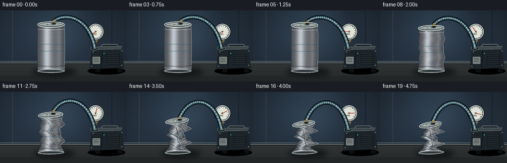
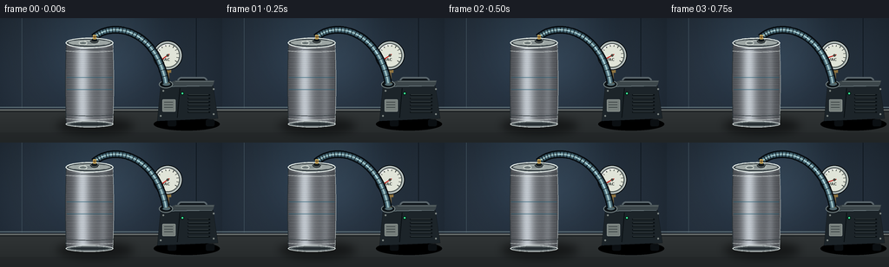

CODING AGENTS AS PIXEL WORLD MODELS
traex/GPT-5.6-Sol · phygen_017
点击播放 · 原生 RGB 像素
逐轮保存的候选
回放视频、检查图与代码变化。
每份候选均可单独播放。实际图片检查记录在下方工具轨迹中。
候选 01播放与检查图
点击播放 · 原生 RGB 像素


展开代码变化
--- 上一保存版本
+++ 本次保存版本
@@ -0,0 +1,347 @@
+from pathlib import Path
+import math
+import numpy as np
+from PIL import Image, ImageDraw, ImageFont, ImageFilter
+import artifact_io
+
+# Supersampled procedural renderer. Everything is drawn from geometric primitives.
+W, H, N = 256, 144, 20
+S = 4
+WW, HH = W*S, H*S
+rng = np.random.default_rng(17017)
+
+
+def sc(v):
+ return int(round(v*S))
+
+
+def pts(seq):
+ return [(sc(x), sc(y)) for x, y in seq]
+
+
+def bezier(p0, p1, p2, p3, n=80):
+ out = []
+ for t in np.linspace(0, 1, n):
+ q = 1-t
+ out.append((q**3*p0[0] + 3*q*q*t*p1[0] + 3*q*t*t*p2[0] + t**3*p3[0],
+ q**3*p0[1] + 3*q*q*t*p1[1] + 3*q*t*t*p2[1] + t**3*p3[1]))
+ return out
+
+
+def on_curve(curve, f):
+ z = np.clip(f, 0, 1)*(len(curve)-1)
+ i = min(int(z), len(curve)-2)
+ a = z-i
+ return (curve[i][0]*(1-a)+curve[i+1][0]*a,
+ curve[i][1]*(1-a)+curve[i+1][1]*a)
+
+
+def rotated_ellipse(draw, box, angle, fill, outline=None, width=1, samples=72):
+ x0,y0,x1,y1 = box
+ cx,cy=(x0+x1)/2,(y0+y1)/2
+ rx,ry=(x1-x0)/2,(y1-y0)/2
+ ca,sa=math.cos(angle),math.sin(angle)
+ pp=[]
+ for a in np.linspace(0,2*math.pi,samples,endpoint=False):
+ x,y=rx*math.cos(a),ry*math.sin(a)
+ pp.append((cx+x*ca-y*sa,cy+x*sa+y*ca))
+ draw.polygon(pts(pp), fill=fill)
+ if outline:
+ draw.line(pts(pp+[pp[0]]), fill=outline, width=sc(width), joint='curve')
+
+
+def smoothstep(x):
+ x=max(0.0,min(1.0,x))
+ return x*x*(3-2*x)
+
+# Static lab background with vignette, wall glow, and fine sensor grain.
+yy, xx = np.mgrid[0:HH, 0:WW]
+X, Y = xx/S, yy/S
+rad = np.sqrt(((X-113)/175)**2 + ((Y-55)/115)**2)
+base = np.zeros((HH,WW,3), dtype=np.float32)
+base[:,:,0] = 25 + 21*np.clip(1-rad,0,1) + 3*(Y/H)
+base[:,:,1] = 34 + 26*np.clip(1-rad,0,1) + 4*(Y/H)
+base[:,:,2] = 43 + 33*np.clip(1-rad,0,1) + 6*(Y/H)
+# faint vertical lab-panel bands
+base += (1.3*np.sin(X/17.0))[...,None]
+noise = rng.normal(0, 0.75, (HH,WW,1))
+base += noise
+background = Image.fromarray(np.uint8(np.clip(base,0,255)), 'RGB')
+
+# Reusable final-shape profiles, linearly morphed from an intact cylinder.
+node_v = np.array([0,.07,.16,.26,.37,.48,.59,.70,.81,.91,1.0])
+node_w = np.array([22,19,10,21,8,18,7,21,11,18,25], dtype=float)
+node_c = np.array([-2,-1,3,5,-4,-6,3,6,-3,-2,0], dtype=float)
+
+
+def geometry(d):
+ # Bottom stays on the bench while the lid is pulled downward by implosion.
+ top = 28 + 38*(d**1.08)
+ bot = 122
+ vs = np.linspace(0,1,101)
+ intact_w = 27.0 + 1.0*np.sin(np.pi*vs)
+ fw = np.interp(vs,node_v,node_w)
+ fc = np.interp(vs,node_v,node_c)
+ # buckles arrive non-uniformly instead of simply scaling the cylinder
+ dd = d*(0.88 + 0.12*np.sin(vs*5*math.pi+0.4))
+ widths = intact_w*(1-dd) + fw*dd
+ centers = 103 + fc*(d**1.18)
+ # minute asymmetry as the metal snaps, deterministic and temporally smooth
+ centers += (0.50*d*math.sin(d*17))*np.sin(vs*3*math.pi)
+ ys = top + vs*(bot-top)
+ return vs,ys,centers,widths,top,bot
+
+
+def at_v(geom,v):
+ vs,ys,cs,ws,top,bot=geom
+ return (float(np.interp(v,vs,cs)), float(np.interp(v,vs,ys)), float(np.interp(v,vs,ws)))
+
+
+def draw_panel_and_bench(im):
+ d=ImageDraw.Draw(im)
+ # blurred pool of light on rear wall
+ glow=Image.new('RGBA',(WW,HH),(0,0,0,0)); gd=ImageDraw.Draw(glow)
+ gd.ellipse((sc(37),sc(-44),sc(194),sc(106)),fill=(85,130,156,28))
+ glow=glow.filter(ImageFilter.GaussianBlur(sc(24)))
+ im.paste(glow,(0,0),glow)
+ d=ImageDraw.Draw(im)
+ # wall seams and a soft back ledge
+ d.line(pts([(25,0),(25,104)]), fill=(73,91,102,38), width=sc(.55))
+ d.line(pts([(226,0),(226,104)]), fill=(12,20,27,90), width=sc(.65))
+ d.line(pts([(0,103),(256,103)]), fill=(100,119,126,60), width=sc(1))
+ d.rectangle((0,sc(105),WW,HH), fill=(40,45,48,255))
+ # bench gradient stripes
+ for y in range(sc(105),HH):
+ yy0=y/S
+ c=int(49-13*(yy0-105)/(H-105))
+ d.line([(0,y),(WW,y)],fill=(c,c+4,c+5,255))
+ d.line(pts([(0,106),(256,106)]),fill=(122,129,128,255),width=sc(1))
+ d.line(pts([(0,108),(256,108)]),fill=(28,33,35,255),width=sc(1))
+
+
+def draw_pump(im, gauge_value):
+ d=ImageDraw.Draw(im,'RGBA')
+ # Pump shadow and rubber feet
+ d.ellipse((sc(177),sc(115),sc(253),sc(130)),fill=(0,0,0,95))
+ d.rounded_rectangle((sc(193),sc(117),sc(203),sc(125)),radius=sc(2),fill=(11,15,18,255))
+ d.rounded_rectangle((sc(237),sc(117),sc(247),sc(125)),radius=sc(2),fill=(11,15,18,255))
+ # handle behind chassis
+ d.rounded_rectangle((sc(204),sc(68),sc(239),sc(82)),radius=sc(5),fill=(12,18,23,255),outline=(90,102,108,255),width=sc(2))
+ d.rounded_rectangle((sc(209),sc(72),sc(235),sc(82)),radius=sc(3),fill=(35,43,47,255))
+ # dark industrial pump, subtly perspective-shaped
+ body=[(185,78),(245,76),(251,116),(181,119)]
+ d.polygon(pts(body),fill=(28,36,41,255),outline=(9,13,16,255))
+ d.line(pts([(186,79),(244,78)]),fill=(117,132,137,255),width=sc(1))
+ d.polygon(pts([(185,78),(202,72),(247,72),(245,78)]),fill=(60,70,74,255))
+ d.line(pts([(202,73),(246,73)]),fill=(126,137,138,220),width=sc(.6))
+ # cylinder cap / inlet
+ d.ellipse((sc(183),sc(72),sc(199),sc(81)),fill=(12,18,22,255),outline=(119,132,133,255),width=sc(1))
+ d.ellipse((sc(187),sc(74),sc(196),sc(78)),fill=(82,105,111,255))
+ # vents
+ for j in range(6):
+ y=88+j*4
+ d.rounded_rectangle((sc(216),sc(y),sc(242),sc(y+1.5)),radius=sc(.7),fill=(8,14,17,220))
+ d.line(pts([(217,y+.25),(240,y+.25)]),fill=(78,88,90,100),width=sc(.45))
+ # side face, bolts and power lamp
+ d.line(pts([(207,81),(204,115)]),fill=(9,15,18,180),width=sc(1))
+ for x,y in [(188,84),(246,82),(185,113),(246,111)]:
+ d.ellipse((sc(x-1),sc(y-1),sc(x+1),sc(y+1)),fill=(128,136,133,230))
+ d.ellipse((sc(208),sc(85),sc(212),sc(89)),fill=(4,29,20,255))
+ d.ellipse((sc(209),sc(86),sc(211),sc(88)),fill=(64,244,158,255))
+ # subdued label plate
+ d.rounded_rectangle((sc(187),sc(94),sc(202),sc(108)),radius=sc(1),fill=(117,126,123,90),outline=(165,173,168,100),width=sc(.5))
+ for k in range(3):
+ d.line(pts([(189,97+k*3),(199,97+k*3)]),fill=(21,28,31,115),width=sc(.45))
+
+ # Gauge stem and body (foreground of the pump, behind hose highlights)
+ d.line(pts([(193,75),(193,58)]),fill=(112,96,65,255),width=sc(4))
+ d.rectangle((sc(189),sc(57),sc(197),sc(63)),fill=(144,117,65,255))
+ cx,cy,r=193,43,16
+ d.ellipse((sc(cx-r-1),sc(cy-r-1),sc(cx+r+1),sc(cy+r+1)),fill=(10,15,18,210))
+ d.ellipse((sc(cx-r),sc(cy-r),sc(cx+r),sc(cy+r)),fill=(154,164,163,255),outline=(211,220,216,255),width=sc(1))
+ d.ellipse((sc(cx-r+2),sc(cy-r+2),sc(cx+r-2),sc(cy+r-2)),fill=(224,228,216,255),outline=(71,79,76,255),width=sc(1))
+ # dial ticks from atmospheric to deep vacuum
+ for a in np.linspace(math.radians(145),math.radians(395),12):
+ x1=cx+10.5*math.cos(a); y1=cy+10.5*math.sin(a)
+ x2=cx+13.0*math.cos(a); y2=cy+13.0*math.sin(a)
+ d.line(pts([(x1,y1),(x2,y2)]),fill=(46,53,51,255),width=sc(.65))
+ # simple V mark communicates vacuum without relying on a brand
+ try:
+ font=ImageFont.truetype('/usr/share/fonts/truetype/dejavu/DejaVuSans-Bold.ttf',sc(4.5))
+ except Exception:
+ font=None
+ d.text((sc(190.7),sc(48)), 'VAC', font=font, fill=(59,65,61,255),anchor='mm')
+ # needle sweeps clockwise as pressure drops
+ ang=math.radians(145+230*gauge_value)
+ tip=(cx+10.5*math.cos(ang),cy+10.5*math.sin(ang))
+ tail=(cx-2.5*math.cos(ang),cy-2.5*math.sin(ang))
+ d.line(pts([tail,tip]),fill=(190,40,33,255),width=sc(1.15))
+ d.ellipse((sc(cx-1.5),sc(cy-1.5),sc(cx+1.5),sc(cy+1.5)),fill=(76,72,63,255))
+ # glass glint
+ d.arc((sc(cx-r+3),sc(cy-r+3),sc(cx+r-3),sc(cy+r-3)),200,285,fill=(255,255,255,150),width=sc(1))
+
+
+def draw_hose(im, geom, frame, vacuum):
+ d=ImageDraw.Draw(im,'RGBA')
+ c0,y0,w0=at_v(geom,0)
+ endpoint=(c0+5.5,y0-6.0)
+ # A flexible reinforced vacuum line rises from the hermetic coupler and enters pump.
+ curve=bezier(endpoint,(126,5),(178,8),(191,75),100)
+ cp=pts(curve)
+ d.line(cp,fill=(5,10,14,235),width=sc(9),joint='curve')
+ d.line(cp,fill=(54,81,93,255),width=sc(6),joint='curve')
+ d.line(cp,fill=(95,133,145,190),width=sc(3.5),joint='curve')
+ d.line(cp,fill=(191,221,220,105),width=sc(1),joint='curve')
+ # spiral reinforcement rings
+ for f in np.linspace(.035,.96,24):
+ x,y=on_curve(curve,f)
+ x2,y2=on_curve(curve,min(1,f+.012))
+ dx,dy=x2-x,y2-y
+ L=max(.01,math.hypot(dx,dy)); nx,ny=-dy/L,dx/L
+ d.line(pts([(x-3.2*nx,y-3.2*ny),(x+3.2*nx,y+3.2*ny)]),fill=(8,20,26,160),width=sc(.7))
+ # Air streaks travel from the can toward the pump, fading as the vessel empties.
+ count=max(1,int(round(6-4*vacuum)))
+ for k in range(count):
+ f=(0.11*k + frame*.078) % .72 + .13
+ x,y=on_curve(curve,f)
+ x2,y2=on_curve(curve,min(.98,f+.035))
+ alpha=int(185*(1-.52*vacuum))
+ d.line(pts([(x,y),(x2,y2)]),fill=(200,239,245,alpha),width=sc(1.0))
+ return endpoint
+
+
+def draw_can_shadow(im,d):
+ q=Image.new('RGBA',(WW,HH),(0,0,0,0)); qd=ImageDraw.Draw(q)
+ # collapse shortens and slightly narrows the contact shadow
+ qd.ellipse((sc(65+5*d),sc(115),sc(154-5*d),sc(134)),fill=(0,0,0,135))
+ q=q.filter(ImageFilter.GaussianBlur(sc(5)))
+ im.paste(q,(0,0),q)
+
+
+def draw_can(im, geom, dval, frame):
+ vs,ys,cs,ws,top,bot=geom
+ # Build a high resolution silhouette.
+ right=[(cs[i]+ws[i],ys[i]) for i in range(len(vs))]
+ left=[(cs[i]-ws[i],ys[i]) for i in range(len(vs)-1,-1,-1)]
+ poly=right+left
+ mask=Image.new('L',(WW,HH),0)
+ md=ImageDraw.Draw(mask)
+ md.polygon(pts(poly),fill=255)
+ # Metallic body: local shading follows the deformed center line and width.
+ arr=np.zeros((HH,WW,4),dtype=np.uint8)
+ m=np.asarray(mask)
+ Yb=np.arange(HH)/S
+ center_y=np.interp(Yb,ys,cs,left=cs[0],right=cs[-1])
+ width_y=np.interp(Yb,ys,ws,left=ws[0],right=ws[-1])
+ u=(X-center_y[:,None])/np.maximum(width_y[:,None],1)
+ lum=(103 + 91*np.exp(-((u+0.30)/.29)**2) + 24*np.exp(-((u-.58)/.16)**2)
+ - 27*np.abs(u)**1.7 + 4*np.sin(Y*2.55) + 2*np.sin(Y*10.7))
+ # changing normals make deep dents dark and sharp folds bright
+ lum += dval*(15*np.sin((Y-top)/(max(bot-top,1))*9*math.pi + u*3.5)
+ - 14*np.maximum(0,np.cos((Y-top)/(max(bot-top,1))*7*math.pi+1.2)))
+ fine=rng.normal(0,2.1,(HH,WW))
+ lum=np.clip(lum+fine,38,230)
+ arr[:,:,0]=np.clip(lum*1.00,0,255)
+ arr[:,:,1]=np.clip(lum*1.035,0,255)
+ arr[:,:,2]=np.clip(lum*1.055+3,0,255)
+ arr[:,:,3]=m
+ metal=Image.fromarray(arr,'RGBA')
+ im.paste(metal,(0,0),metal)
+
+ # Edge lights, body ribs, and creases, clipped to silhouette.
+ detail=Image.new('RGBA',(WW,HH),(0,0,0,0)); dd=ImageDraw.Draw(detail,'RGBA')
+ dd.line(pts([(cs[i]-ws[i],ys[i]) for i in range(len(vs))]),fill=(35,44,49,240),width=sc(1.2),joint='curve')
+ dd.line(pts([(cs[i]+ws[i],ys[i]) for i in range(len(vs))]),fill=(221,232,231,215),width=sc(1.0),joint='curve')
+ # Structural rings near lid and base, correctly compressed with body.
+ for vv,col,wid in [(.075,(63,71,74,205),1),(.105,(225,232,229,170),.75),(.89,(55,63,67,210),1),(.94,(218,225,223,180),.8)]:
+ c,y,w=at_v(geom,vv)
+ curve=[]
+ for q in np.linspace(-1,1,45):
+ curve.append((c+q*w,y+1.25*(1-q*q)+dval*1.1*math.sin(q*5)))
+ dd.line(pts(curve),fill=col,width=sc(wid))
+ # Fine brushed horizontal striations.
+ for vv in np.linspace(.14,.85,18):
+ c,y,w=at_v(geom,float(vv))
+ dd.line(pts([(c-w*.92,y),(c+w*.92,y+.20*math.sin(vv*31))]),fill=(235,241,239,26),width=sc(.4))
+ # Generic blue label bands remain attached to aluminum and visibly crumple.
+ for vv in [.43,.58]:
+ c,y,w=at_v(geom,vv)
+ dd.line(pts([(c-w*.94,y),(c+w*.94,y)]),fill=(31,91,115,115),width=sc(1.15))
+ # Irregular sharp buckle network, opacity increases with collapse.
+ a=int(235*smoothstep((dval-.08)/.72))
+ if a>0:
+ crease_sets=[
+ [(.03,-.72),(.20,.18),(.34,.92)],
+ [(.15,.94),(.31,-.25),(.47,-.96)],
+ [(.38,-.92),(.52,.16),(.64,.98)],
+ [(.56,.96),(.70,-.30),(.83,-.92)],
+ [(.73,-.78),(.86,.12),(.97,.65)],
+ [(.21,-.35),(.43,.35),(.61,-.20),(.80,.52)],
+ ]
+ for j,path in enumerate(crease_sets):
+ pp=[]
+ for vv,uu in path:
+ c,y,w=at_v(geom,vv); pp.append((c+uu*w,y))
+ dd.line(pts(pp),fill=(25,34,39,a),width=sc(1.25),joint='curve')
+ # highlight on one side makes each crease read as folded metal
+ hi=[(x+.65,y-.55) for x,y in pp]
+ dd.line(pts(hi),fill=(244,248,241,int(a*.72)),width=sc(.72),joint='curve')
+ # Small scuffs catch light on the most compressed folds.
+ if dval>.35:
+ for vv,uu in [(.26,.1),(.48,-.35),(.66,.25),(.82,-.12)]:
+ c,y,w=at_v(geom,vv)
+ dd.line(pts([(c+uu*w-3,y-1),(c+uu*w+3,y+1)]),fill=(251,252,243,int(155*dval)),width=sc(.75))
+ detail.putalpha(Image.composite(detail.getchannel('A'),Image.new('L',(WW,HH),0),mask))
+ im.paste(detail,(0,0),detail)
+
+ # Base rim, mostly fixed on tabletop.
+ cB,yB,wB=at_v(geom,1.0)
+ angle=math.radians(-2*dval)
+ dr=ImageDraw.Draw(im,'RGBA')
+ rotated_ellipse(dr,(cB-wB,yB-3,cB+wB,yB+4),angle,(62,70,74,255),(210,218,216,230),1)
+ rotated_ellipse(dr,(cB-wB+3,yB-1.5,cB+wB-3,yB+2.5),angle,(39,47,51,230),(111,121,123,230),.7)
+
+ # Lid and rim remain recognizable as the upper walls cave downward.
+ cT,yT,wT=at_v(geom,0)
+ angle=math.radians(-9*dval)
+ rotated_ellipse(dr,(cT-wT,yT-5,cT+wT,yT+6),angle,(72,82,86,255),(230,238,234,255),1.3)
+ rotated_ellipse(dr,(cT-wT+2,yT-3.5,cT+wT-2,yT+4),angle,(156,165,163,255),(46,55,59,230),.75)
+ # stamped lid circles
+ rotated_ellipse(dr,(cT-11,yT-2,cT+11,yT+2.7),angle,(132,142,142,180),(205,213,209,180),.55)
+ # pull-tab partly visible behind the vacuum adapter
+ rotated_ellipse(dr,(cT-12,yT-1.2,cT-3,yT+2.5),angle,(109,120,120,255),(218,225,219,220),.7)
+ # hermetic rubber stopper and brass hose barb
+ dr.ellipse((sc(cT+1.2),sc(yT-5.1),sc(cT+10.0),sc(yT+0.1)),fill=(20,26,28,255),outline=(121,133,133,230),width=sc(.7))
+ dr.rounded_rectangle((sc(cT+4.0),sc(yT-8.8),sc(cT+7.8),sc(yT-3.8)),radius=sc(.8),fill=(159,125,63,255),outline=(220,188,105,255),width=sc(.7))
+ dr.line(pts([(cT+3.5,yT-6.5),(cT+8.2,yT-6.5)]),fill=(82,63,37,255),width=sc(.7))
+ # thin black seal line underscores airtight connection
+ dr.arc((sc(cT+.8),sc(yT-5.5),sc(cT+10.4),sc(yT+.8)),0,180,fill=(4,8,10,255),width=sc(.8))
+
+
+def render_frame(i):
+ t=i/(N-1)
+ vacuum=smoothstep(t)
+ x=max(0,min(1,(t-.07)/.86))
+ collapse=smoothstep(x)**1.55
+ geom=geometry(collapse)
+ im=background.convert('RGBA')
+ draw_panel_and_bench(im)
+ draw_can_shadow(im,collapse)
+ draw_pump(im,vacuum)
+ # hose must sit behind the can fitting but in front of background/pump
+ draw_hose(im,geom,i,vacuum)
+ draw_can(im,geom,collapse,i)
+ # very soft foreground contact darkening
+ fg=Image.new('RGBA',(WW,HH),(0,0,0,0)); fd=ImageDraw.Draw(fg)
+ fd.rectangle((0,sc(132),WW,HH),fill=(7,10,12,28))
+ im=Image.alpha_composite(im,fg)
+ return np.asarray(im.convert('RGB').resize((W,H),Image.Resampling.LANCZOS),dtype=np.uint8)
+
+
+def main():
+ frames=np.stack([render_frame(i) for i in range(N)],axis=0)
+ assert frames.shape==(20,144,256,3) and frames.dtype==np.uint8
+ artifact_io.save(frames,Path(__file__).resolve().parent)
+
+if __name__=='__main__':
+ main()
可观测工具轨迹
实际执行的命令与返回图片。
命令 1exit 0
/bin/bash -lc "cat prompt.txt && printf '\\n--- GENERATION_RULES.md ---\\n' && cat GENERATION_RULES.md && printf '\\n--- task_spec.json ---\\n' && cat task_spec.json"
命令 2exit 0
/bin/bash -lc "find . -maxdepth 2 -type f -printf '%p\\n' | sort && printf '\\n--- tools ---\\n' && command -v ffmpeg || true && command -v blender || true && command -v python3 || true"
命令 3exit 0
/bin/bash -lc 'cat artifact_io.py'
命令 4exit 0
/bin/bash -lc "python3 - <<'PY' mods=['numpy','PIL','cv2','imageio','matplotlib'] for m in mods: try: x=__import__(m) print(m,'OK',getattr(x,'__version__','')) except Exception as e: print(m,'NO',e) PY"
命令 5exit 0
/bin/bash -lc "cat > generate.py <<'PY'
from pathlib import Path
import math
import numpy as np
from PIL import Image, ImageDraw, ImageFont, ImageFilter
import artifact_io
# Supersampled procedural renderer. Everything is drawn from geometric primitives.
W, H, N = 256, 144, 20
S = 4
WW, HH = W*S, H*S
rng = np.random.default_rng(17017)
def sc(v):
return int(round(v*S))
def pts(seq):
return [(sc(x), sc(y)) for x, y in seq]
def bezier(p0, p1, p2, p3, n=80):
out = []
for t in np.linspace(0, 1, n):
q = 1-t
out.append((q**3*p0[0] + 3*q*q*t*p1[0] + 3*q*t*t*p2[0] + t**3*p3[0],
q**3*p0[1] + 3*q*q*t*p1[1] + 3*q*t*t*p2[1] + t**3*p3[1]))
return out
def on_curve(curve, f):
z = np.clip(f, 0, 1)*(len(curve)-1)
i = min(int(z), len(curve)-2)
a = z-i
return (curve[i][0]*(1-a)+curve[i+1][0]*a,
curve[i][1]*(1-a)+curve[i+1][1]*a)
def rotated_ellipse(draw, box, angle, fill, outline=None, width=1, samples=72):
x0,y0,x1,y1 = box
cx,cy=(x0+x1)/2,(y0+y1)/2
rx,ry=(x1-x0)/2,(y1-y0)/2
ca,sa=math.cos(angle),math.sin(angle)
pp=[]
for a in np.linspace(0,2*math.pi,samples,endpoint=False):
x,y=rx*math.cos(a),ry*math.sin(a)
pp.append((cx+x*ca-y*sa,cy+x*sa+y*ca))
draw.polygon(pts(pp), fill=fill)
if outline:
draw.line(pts(pp+[pp[0]]), fill=outline, width=sc(width), joint='curve')
def smoothstep(x):
x=max(0.0,min(1.0,x))
return x*x*(3-2*x)
# Static lab background with vignette, wall glow, and fine sensor grain.
yy, xx = np.mgrid[0:HH, 0:WW]
X, Y = xx/S, yy/S
rad = np.sqrt(((X-113)/175)**2 + ((Y-55)/115)**2)
base = np.zeros((HH,WW,3), dtype=np.float32)
base[:,:,0] = 25 + 21*np.clip(1-rad,0,1) + 3*(Y/H)
base[:,:,1] = 34 + 26*np.clip(1-rad,0,1) + 4*(Y/H)
base[:,:,2] = 43 + 33*np.clip(1-rad,0,1) + 6*(Y/H)
# faint vertical lab-panel bands
base += (1.3*np.sin(X/17.0))[...,None]
noise = rng.normal(0, 0.75, (HH,WW,1))
base += noise
background = Image.fromarray(np.uint8(np.clip(base,0,255)), 'RGB')
# Reusable final-shape profiles, linearly morphed from an intact cylinder.
node_v = np.array([0,.07,.16,.26,.37,.48,.59,.70,.81,.91,1.0])
node_w = np.array([22,19,10,21,8,18,7,21,11,18,25], dtype=float)
node_c = np.array([-2,-1,3,5,-4,-6,3,6,-3,-2,0], dtype=float)
def geometry(d):
# Bottom stays on the bench while the lid is pulled downward by implosion.
top = 28 + 38*(d**1.08)
bot = 122
vs = np.linspace(0,1,101)
intact_w = 27.0 + 1.0*np.sin(np.pi*vs)
fw = np.interp(vs,node_v,node_w)
fc = np.interp(vs,node_v,node_c)
# buckles arrive non-uniformly instead of simply scaling the cylinder
dd = d*(0.88 + 0.12*np.sin(vs*5*math.pi+0.4))
widths = intact_w*(1-dd) + fw*dd
centers = 103 + fc*(d**1.18)
# minute asymmetry as the metal snaps, deterministic and temporally smooth
centers += (0.50*d*math.sin(d*17))*np.sin(vs*3*math.pi)
ys = top + vs*(bot-top)
return vs,ys,centers,widths,top,bot
def at_v(geom,v):
vs,ys,cs,ws,top,bot=geom
return (float(np.interp(v,vs,cs)), float(np.interp(v,vs,ys)), float(np.interp(v,vs,ws)))
def draw_panel_and_bench(im):
d=ImageDraw.Draw(im)
# blurred pool of light on rear wall
glow=Image.new('RGBA',(WW,HH),(0,0,0,0)); gd=ImageDraw.Draw(glow)
gd.ellipse((sc(37),sc(-44),sc(194),sc(106)),fill=(85,130,156,28))
glow=glow.filter(ImageFilter.GaussianBlur(sc(24)))
im.paste(glow,(0,0),glow)
d=ImageDraw.Draw(im)
# wall seams and a soft back ledge
d.line(pts([(25,0),(25,104)]), fill=(73,91,102,38), width=sc(.55))
d.line(pts([(226,0),(226,104)]), fill=(12,20,27,90), width=sc(.65))
d.line(pts([(0,103),(256,103)]), fill=(100,119,126,60), width=sc(1))
d.rectangle((0,sc(105),WW,HH), fill=(40,45,48,255))
# bench gradient stripes
for y in range(sc(105),HH):
yy0=y/S
c=int(49-13*(yy0-105)/(H-105))
d.line([(0,y),(WW,y)],fill=(c,c+4,c+5,255))
d.line(pts([(0,106),(256,106)]),fill=(122,129,128,255),width=sc(1))
d.line(pts([(0,108),(256,108)]),fill=(28,33,35,255),width=sc(1))
def draw_pump(im, gauge_value):
d=ImageDraw.Draw(im,'RGBA')
# Pump shadow and rubber feet
d.ellipse((sc(177),sc(115),sc(253),sc(130)),fill=(0,0,0,95))
d.rounded_rectangle((sc(193),sc(117),sc(203),sc(125)),radius=sc(2),fill=(11,15,18,255))
d.rounded_rectangle((sc(237),sc(117),sc(247),sc(125)),radius=sc(2),fill=(11,15,18,255))
# handle behind chassis
d.rounded_rectangle((sc(204),sc(68),sc(239),sc(82)),radius=sc(5),fill=(12,18,23,255),outline=(90,102,108,255),width=sc(2))
d.rounded_rectangle((sc(209),sc(72),sc(235),sc(82)),radius=sc(3),fill=(35,43,47,255))
# dark industrial pump, subtly perspective-shaped
body=[(185,78),(245,76),(251,116),(181,119)]
d.polygon(pts(body),fill=(28,36,41,255),outline=(9,13,16,255))
d.line(pts([(186,79),(244,78)]),fill=(117,132,137,255),width=sc(1))
d.polygon(pts([(185,78),(202,72),(247,72),(245,78)]),fill=(60,70,74,255))
d.line(pts([(202,73),(246,73)]),fill=(126,137,138,220),width=sc(.6))
# cylinder cap / inlet
d.ellipse((sc(183),sc(72),sc(199),sc(81)),fill=(12,18,22,255),outline=(119,132,133,255),width=sc(1))
d.ellipse((sc(187),sc(74),sc(196),sc(78)),fill=(82,105,111,255))
# vents
for j in range(6):
y=88+j*4
d.rounded_rectangle((sc(216),sc(y),sc(242),sc(y+1.5)),radius=sc(.7),fill=(8,14,17,220))
d.line(pts([(217,y+.25),(240,y+.25)]),fill=(78,88,90,100),width=sc(.45))
# side face, bolts and power lamp
d.line(pts([(207,81),(204,115)]),fill=(9,15,18,180),width=sc(1))
for x,y in [(188,84),(246,82),(185,113),(246,111)]:
d.ellipse((sc(x-1),sc(y-1),sc(x+1),sc(y+1)),fill=(128,136,133,230))
d.ellipse((sc(208),sc(85),sc(212),sc(89)),fill=(4,29,20,255))
d.ellipse((sc(209),sc(86),sc(211),sc(88)),fill=(64,244,158,255))
# subdued label plate
d.rounded_rectangle((sc(187),sc(94),sc(202),sc(108)),radius=sc(1),fill=(117,126,123,90),outline=(165,173,168,100),width=sc(.5))
for k in range(3):
d.line(pts([(189,97+k*3),(199,97+k*3)]),fill=(21,28,31,115),width=sc(.45))
# Gauge stem and body (foreground of the pump, behind hose highlights)
d.line(pts([(193,75),(193,58)]),fill=(112,96,65,255),width=sc(4))
d.rectangle((sc(189),sc(57),sc(197),sc(63)),fill=(144,117,65,255))
cx,cy,r=193,43,16
d.ellipse((sc(cx-r-1),sc(cy-r-1),sc(cx+r+1),sc(cy+r+1)),fill=(10,15,18,210))
d.ellipse((sc(cx-r),sc(cy-r),sc(cx+r),sc(cy+r)),fill=(154,164,163,255),outline=(211,220,216,255),width=sc(1))
d.ellipse((sc(cx-r+2),sc(cy-r+2),sc(cx+r-2),sc(cy+r-2)),fill=(224,228,216,255),outline=(71,79,76,255),width=sc(1))
# dial ticks from atmospheric to deep vacuum
for a in np.linspace(math.radians(145),math.radians(395),12):
x1=cx+10.5*math.cos(a); y1=cy+10.5*math.sin(a)
x2=cx+13.0*math.cos(a); y2=cy+13.0*math.sin(a)
d.line(pts([(x1,y1),(x2,y2)]),fill=(46,53,51,255),width=sc(.65))
# simple V mark communicates vacuum without relying on a brand
try:
font=ImageFont.truetype('/usr/share/fonts/truetype/dejavu/DejaVuSans-Bold.ttf',sc(4.5))
except Exception:
font=None
d.text((sc(190.7),sc(48)), 'VAC', font=font, fill=(59,65,61,255),anchor='mm')
# needle sweeps clockwise as pressure drops
ang=math.radians(145+230*gauge_value)
tip=(cx+10.5*math.cos(ang),cy+10.5*math.sin(ang))
tail=(cx-2.5*math.cos(ang),cy-2.5*math.sin(ang))
d.line(pts([tail,tip]),fill=(190,40,33,255),width=sc(1.15))
d.ellipse((sc(cx-1.5),sc(cy-1.5),sc(cx+1.5),sc(cy+1.5)),fill=(76,72,63,255))
# glass glint
d.arc((sc(cx-r+3),sc(cy-r+3),sc(cx+r-3),sc(cy+r-3)),200,285,fill=(255,255,255,150),width=sc(1))
def draw_hose(im, geom, frame, vacuum):
d=ImageDraw.Draw(im,'RGBA')
c0,y0,w0=at_v(geom,0)
endpoint=(c0+5.5,y0-6.0)
# A flexible reinforced vacuum line rises from the hermetic coupler and enters pump.
curve=bezier(endpoint,(126,5),(178,8),(191,75),100)
cp=pts(curve)
d.line(cp,fill=(5,10,14,235),width=sc(9),joint='curve')
d.line(cp,fill=(54,81,93,255),width=sc(6),joint='curve')
d.line(cp,fill=(95,133,145,190),width=sc(3.5),joint='curve')
d.line(cp,fill=(191,221,220,105),width=sc(1),joint='curve')
# spiral reinforcement rings
for f in np.linspace(.035,.96,24):
x,y=on_curve(curve,f)
x2,y2=on_curve(curve,min(1,f+.012))
dx,dy=x2-x,y2-y
L=max(.01,math.hypot(dx,dy)); nx,ny=-dy/L,dx/L
d.line(pts([(x-3.2*nx,y-3.2*ny),(x+3.2*nx,y+3.2*ny)]),fill=(8,20,26,160),width=sc(.7))
# Air streaks travel from the can toward the pump, fading as the vessel empties.
count=max(1,int(round(6-4*vacuum)))
for k in range(count):
f=(0.11*k + frame*.078) % .72 + .13
x,y=on_curve(curve,f)
x2,y2=on_curve(curve,min(.98,f+.035))
alpha=int(185*(1-.52*vacuum))
d.line(pts([(x,y),(x2,y2)]),fill=(200,239,245,alpha),width=sc(1.0))
return endpoint
def draw_can_shadow(im,d):
q=Image.new('RGBA',(WW,HH),(0,0,0,0)); qd=ImageDraw.Draw(q)
# collapse shortens and slightly narrows the contact shadow
qd.ellipse((sc(65+5*d),sc(115),sc(154-5*d),sc(134)),fill=(0,0,0,135))
q=q.filter(ImageFilter.GaussianBlur(sc(5)))
im.paste(q,(0,0),q)
def draw_can(im, geom, dval, frame):
vs,ys,cs,ws,top,bot=geom
# Build a high resolution silhouette.
right=[(cs[i]+ws[i],ys[i]) for i in range(len(vs))]
left=[(cs[i]-ws[i],ys[i]) for i in range(len(vs)-1,-1,-1)]
poly=right+left
mask=Image.new('L',(WW,HH),0)
md=ImageDraw.Draw(mask)
md.polygon(pts(poly),fill=255)
# Metallic body: local shading follows the deformed center line and width.
arr=np.zeros((HH,WW,4),dtype=np.uint8)
m=np.asarray(mask)
Yb=np.arange(HH)/S
center_y=np.interp(Yb,ys,cs,left=cs[0],right=cs[-1])
width_y=np.interp(Yb,ys,ws,left=ws[0],right=ws[-1])
u=(X-center_y[:,None])/np.maximum(width_y[:,None],1)
lum=(103 + 91*np.exp(-((u+0.30)/.29)**2) + 24*np.exp(-((u-.58)/.16)**2)
- 27*np.abs(u)**1.7 + 4*np.sin(Y*2.55) + 2*np.sin(Y*10.7))
# changing normals make deep dents dark and sharp folds bright
lum += dval*(15*np.sin((Y-top)/(max(bot-top,1))*9*math.pi + u*3.5)
- 14*np.maximum(0,np.cos((Y-top)/(max(bot-top,1))*7*math.pi+1.2)))
fine=rng.normal(0,2.1,(HH,WW))
lum=np.clip(lum+fine,38,230)
arr[:,:,0]=np.clip(lum*1.00,0,255)
arr[:,:,1]=np.clip(lum*1.035,0,255)
arr[:,:,2]=np.clip(lum*1.055+3,0,255)
arr[:,:,3]=m
metal=Image.fromarray(arr,'RGBA')
im.paste(metal,(0,0),metal)
# Edge lights, body ribs, and creases, clipped to silhouette.
detail=Image.new('RGBA',(WW,HH),(0,0,0,0)); dd=ImageDraw.Draw(detail,'RGBA')
dd.line(pts([(cs[i]-ws[i],ys[i]) for i in range(len(vs))]),fill=(35,44,49,240),width=sc(1.2),joint='curve')
dd.line(pts([(cs[i]+ws[i],ys[i]) for i in range(len(vs))]),fill=(221,232,231,215),width=sc(1.0),joint='curve')
# Structural rings near lid and base, correctly compressed with body.
for vv,col,wid in [(.075,(63,71,74,205),1),(.105,(225,232,229,170),.75),(.89,(55,63,67,210),1),(.94,(218,225,223,180),.8)]:
c,y,w=at_v(geom,vv)
curve=[]
for q in np.linspace(-1,1,45):
curve.append((c+q*w,y+1.25*(1-q*q)+dval*1.1*math.sin(q*5)))
dd.line(pts(curve),fill=col,width=sc(wid))
# Fine brushed horizontal striations.
for vv in np.linspace(.14,.85,18):
c,y,w=at_v(geom,float(vv))
dd.line(pts([(c-w*.92,y),(c+w*.92,y+.20*math.sin(vv*31))]),fill=(235,241,239,26),width=sc(.4))
# Generic blue label bands remain attached to aluminum and visibly crumple.
for vv in [.43,.58]:
c,y,w=at_v(geom,vv)
dd.line(pts([(c-w*.94,y),(c+w*.94,y)]),fill=(31,91,115,115),width=sc(1.15))
# Irregular sharp buckle network, opacity increases with collapse.
a=int(235*smoothstep((dval-.08)/.72))
if a>0:
crease_sets=[
[(.03,-.72),(.20,.18),(.34,.92)],
[(.15,.94),(.31,-.25),(.47,-.96)],
[(.38,-.92),(.52,.16),(.64,.98)],
[(.56,.96),(.70,-.30),(.83,-.92)],
[(.73,-.78),(.86,.12),(.97,.65)],
[(.21,-.35),(.43,.35),(.61,-.20),(.80,.52)],
]
for j,path in enumerate(crease_sets):
pp=[]
for vv,uu in path:
c,y,w=at_v(geom,vv); pp.append((c+uu*w,y))
dd.line(pts(pp),fill=(25,34,39,a),width=sc(1.25),joint='curve')
# highlight on one side makes each crease read as folded metal
hi=[(x+.65,y-.55) for x,y in pp]
dd.line(pts(hi),fill=(244,248,241,int(a*.72)),width=sc(.72),joint='curve')
# Small scuffs catch light on the most compressed folds.
if dval>.35:
for vv,uu in [(.26,.1),(.48,-.35),(.66,.25),(.82,-.12)]:
c,y,w=at_v(geom,vv)
dd.line(pts([(c+uu*w-3,y-1),(c+uu*w+3,y+1)]),fill=(251,252,243,int(155*dval)),width=sc(.75))
detail.putalpha(Image.composite(detail.getchannel('A'),Image.new('L',(WW,HH),0),mask))
im.paste(detail,(0,0),detail)
# Base rim, mostly fixed on tabletop.
cB,yB,wB=at_v(geom,1.0)
angle=math.radians(-2*dval)
dr=ImageDraw.Draw(im,'RGBA')
rotated_ellipse(dr,(cB-wB,yB-3,cB+wB,yB+4),angle,(62,70,74,255),(210,218,216,230),1)
rotated_ellipse(dr,(cB-wB+3,yB-1.5,cB+wB-3,yB+2.5),angle,(39,47,51,230),(111,121,123,230),.7)
# Lid and rim remain recognizable as the upper walls cave downward.
cT,yT,wT=at_v(geom,0)
angle=math.radians(-9*dval)
rotated_ellipse(dr,(cT-wT,yT-5,cT+wT,yT+6),angle,(72,82,86,255),(230,238,234,255),1.3)
rotated_ellipse(dr,(cT-wT+2,yT-3.5,cT+wT-2,yT+4),angle,(156,165,163,255),(46,55,59,230),.75)
# stamped lid circles
rotated_ellipse(dr,(cT-11,yT-2,cT+11,yT+2.7),angle,(132,142,142,180),(205,213,209,180),.55)
# pull-tab partly visible behind the vacuum adapter
rotated_ellipse(dr,(cT-12,yT-1.2,cT-3,yT+2.5),angle,(109,120,120,255),(218,225,219,220),.7)
# hermetic rubber stopper and brass hose barb
dr.ellipse((sc(cT+1.2),sc(yT-5.1),sc(cT+10.0),sc(yT+0.1)),fill=(20,26,28,255),outline=(121,133,133,230),width=sc(.7))
dr.rounded_rectangle((sc(cT+4.0),sc(yT-8.8),sc(cT+7.8),sc(yT-3.8)),radius=sc(.8),fill=(159,125,63,255),outline=(220,188,105,255),width=sc(.7))
dr.line(pts([(cT+3.5,yT-6.5),(cT+8.2,yT-6.5)]),fill=(82,63,37,255),width=sc(.7))
# thin black seal line underscores airtight connection
dr.arc((sc(cT+.8),sc(yT-5.5),sc(cT+10.4),sc(yT+.8)),0,180,fill=(4,8,10,255),width=sc(.8))
def render_frame(i):
t=i/(N-1)
vacuum=smoothstep(t)
x=max(0,min(1,(t-.07)/.86))
collapse=smoothstep(x)**1.55
geom=geometry(collapse)
im=background.convert('RGBA')
draw_panel_and_bench(im)
draw_can_shadow(im,collapse)
draw_pump(im,vacuum)
# hose must sit behind the can fitting but in front of background/pump
draw_hose(im,geom,i,vacuum)
draw_can(im,geom,collapse,i)
# very soft foreground contact darkening
fg=Image.new('RGBA',(WW,HH),(0,0,0,0)); fd=ImageDraw.Draw(fg)
fd.rectangle((0,sc(132),WW,HH),fill=(7,10,12,28))
im=Image.alpha_composite(im,fg)
return np.asarray(im.convert('RGB').resize((W,H),Image.Resampling.LANCZOS),dtype=np.uint8)
def main():
frames=np.stack([render_frame(i) for i in range(N)],axis=0)
assert frames.shape==(20,144,256,3) and frames.dtype==np.uint8
artifact_io.save(frames,Path(__file__).resolve().parent)
if __name__=='__main__':
main()
PY
python3 generate.py
ls -lh pixels.npz inspection.png transition_check.png index.html frames/00.png frames/19.png"命令 6exit 0
/bin/bash -lc "python3 - <<'PY'
import numpy as np, json
from PIL import Image
z=np.load('pixels.npz')['pixels']
print('packed tensor',z.shape,z.dtype)
fs=np.stack([np.asarray(Image.open(f'frames/{i:02d}.png')) for i in range(20)])
print('frames',fs.shape,fs.dtype,fs.min(),fs.max())
print('mean_rgb',np.round(fs.mean((0,1,2)),2))
print('consecutive_MAE',np.round(np.abs(np.diff(fs.astype(np.int16),axis=0)).mean((1,2,3)),2))
print('changed_fraction',np.round((np.diff(fs.astype(np.int16),axis=0)"'!=0).any(3).mean((1,2)),3))
print('"'unique exact frames',len({x.tobytes() for x in fs}))
spec=json.load(open('task_spec.json'))
assert fs.shape==(spec['frames'],spec['height'],spec['width'],3)
assert z.shape==(spec['height'],spec['width'],spec['frames'])
# broad edge occupancy in can ROI by frame: confirms progressive silhouette deformation
import cv2
for i in [0,3,6,9,12,15,19]:
g=cv2.cvtColor(fs[i],cv2.COLOR_RGB2GRAY)
e=cv2.Canny(g,45,100)
print(i,'edge-can',int(e[20:126,65:145].sum()/255),'edge-all',int(e.sum()/255))
PY"命令 7exit 0
/bin/bash -lc 'python3 -m py_compile generate.py && sha256sum generate.py pixels.npz frames/00.png frames/19.png && git status --short 2>/dev/null || true'
保存候选 1 份；完成命令 7 次；可验证图片返回 0 张。原始 API 响应与完整日志保留在本地。